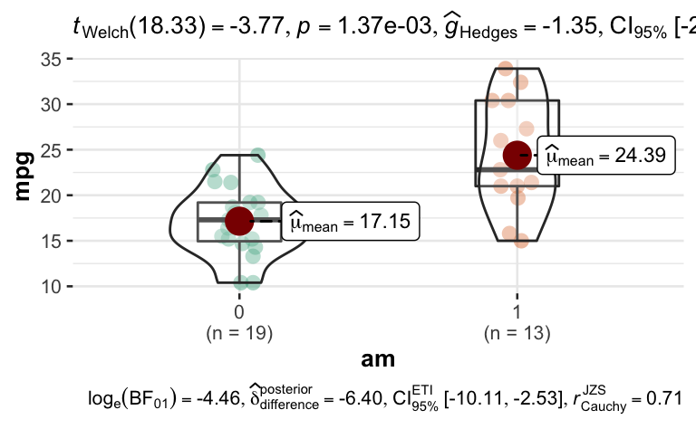

Exercise
Der t-Test ist ein inferenzstatistisches Verfahren des Frequentismus. Welches Skalenniveau passt zu diesem Verfahren?
Hinweisse:
- Die folgende Abbildung gibt Tipps.
- Informationen, die zur Lösung einer Aufgabe nicht nötig sind, sollte man ignorieren.

Answerlist
- UV: nominal (mehrstufig), AV: metrisch
- UV: metrisch, AV: nominal (zweistufig)
- UV: nominal (mehrstufig), AV: nominal (mehrstufig)
- UV: metrisch, AV: nominal (zweistufig)
- UV: nominal (zweistufig), AV: metrisch